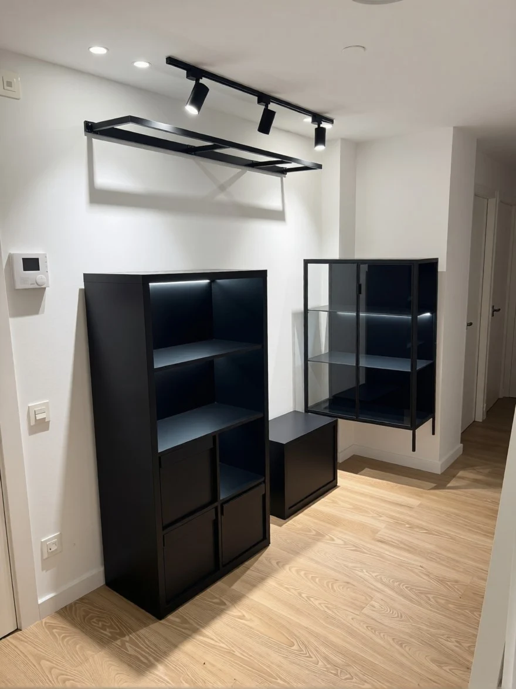
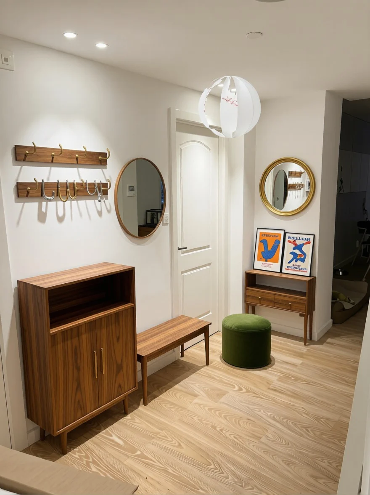
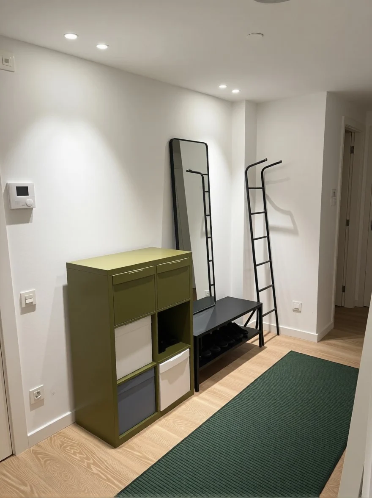
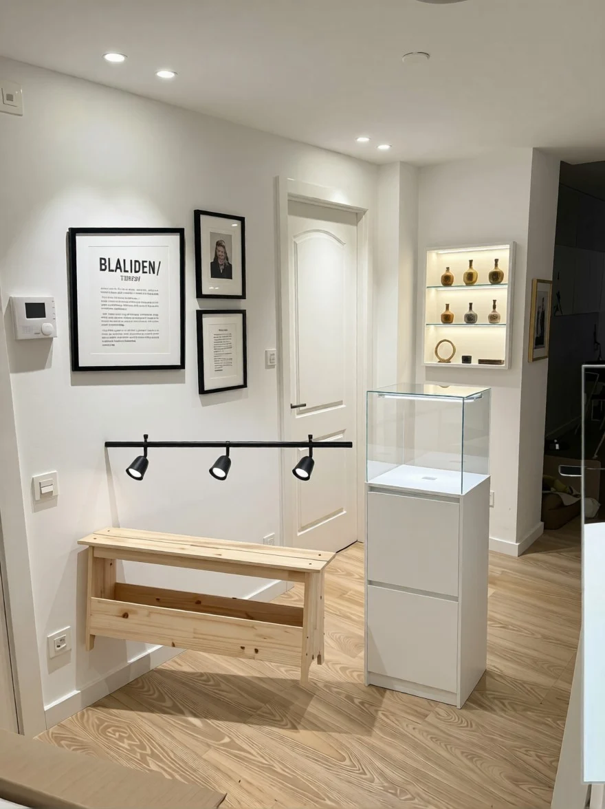
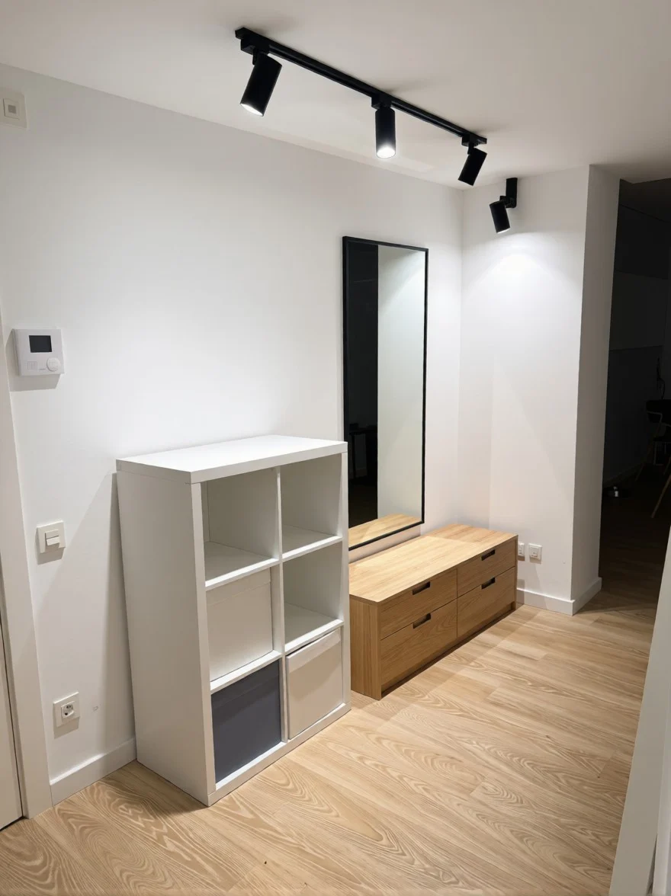
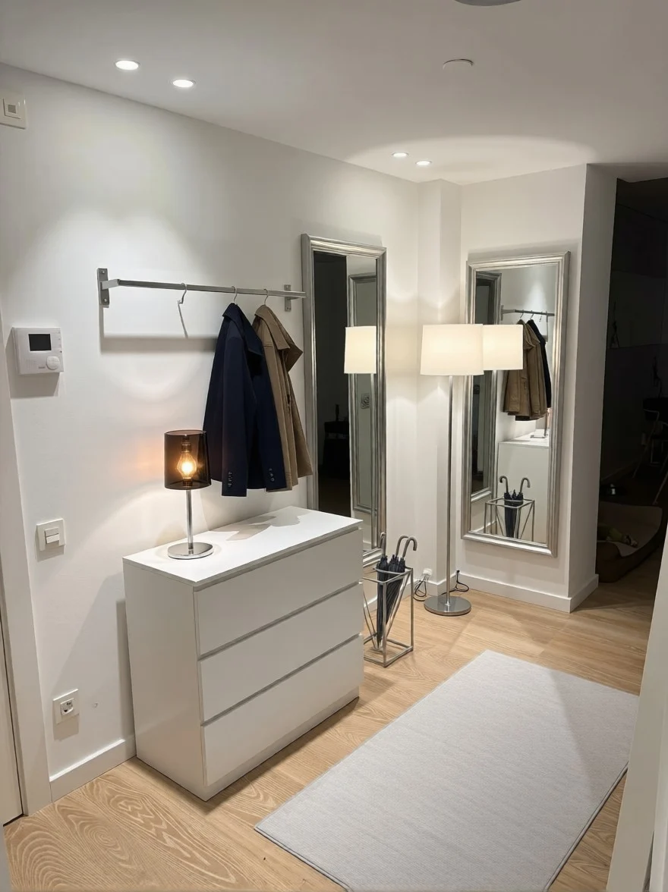
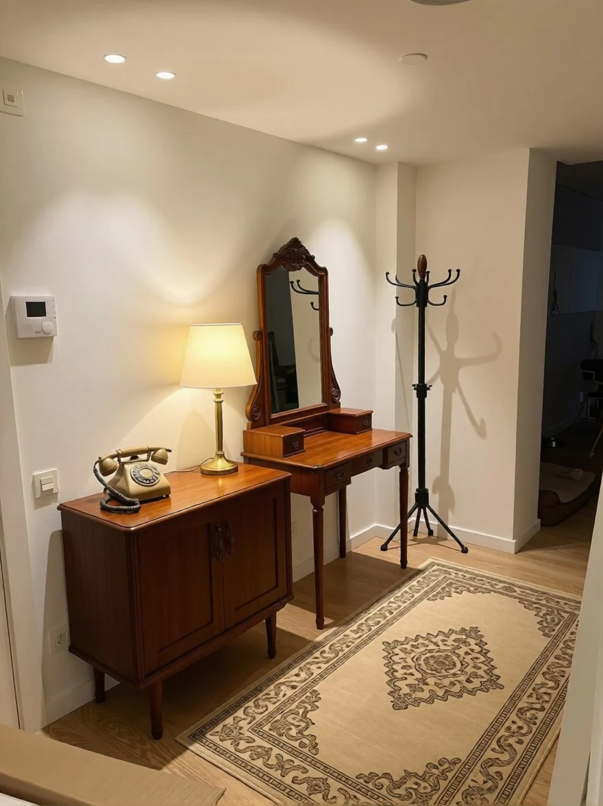
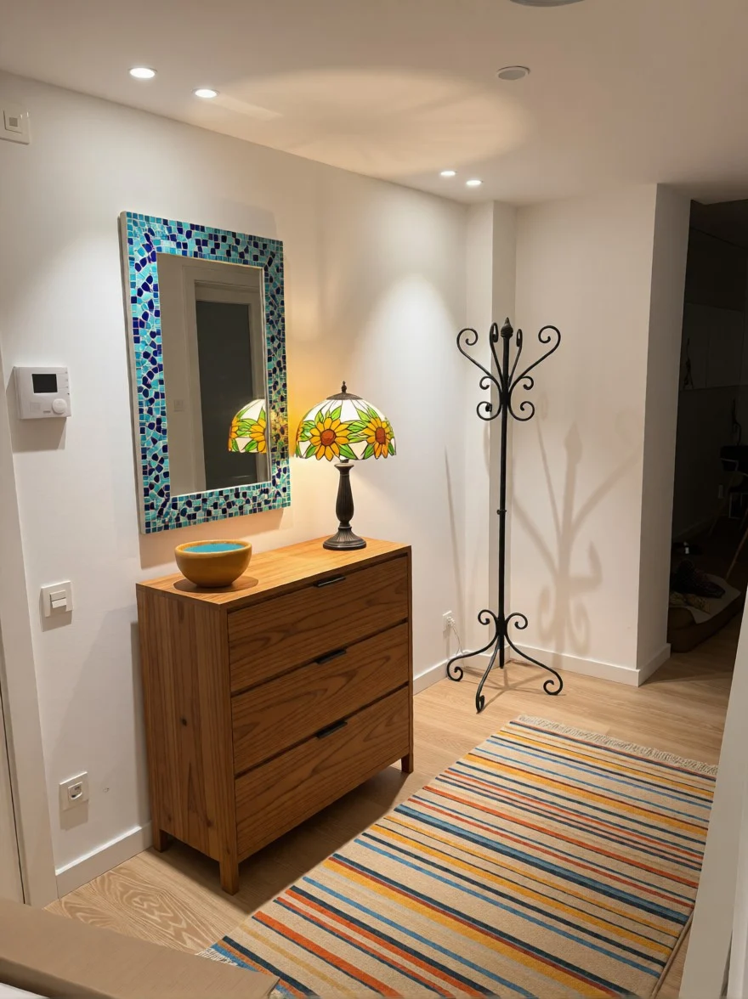
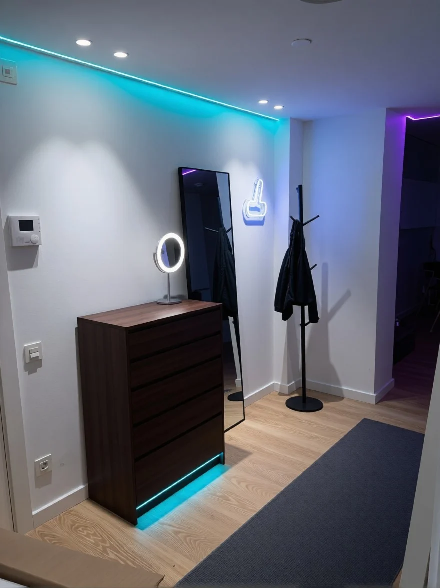
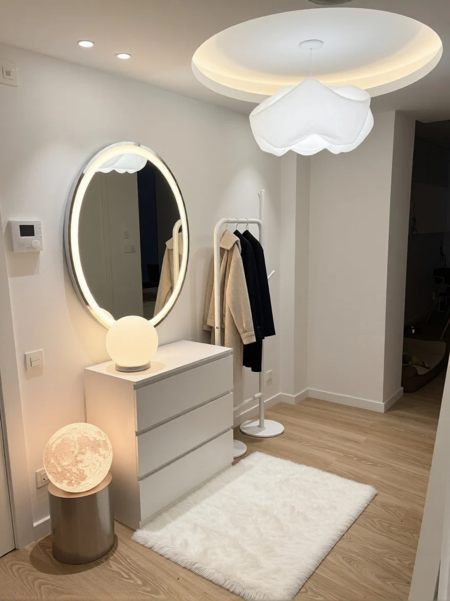

01 Гонки284 – 1 492 €

02 Ретро 70-х391 – 3 092 €

03 Японский минимализм402 – 1 523 €

04 Цветной металл346 – 1 632 €

05 Бутик-витрина160 – 958 €

06 Гардероб с подсветкой368 – 759 €

07 Тотальный хром182 – 608 €

08 Советская квартира224 – 759 €

09 Барселона-модернизм363 – 1 046 €

10 Киберпанк164 – 416 €

11 Лунный отель 2054157 – 565 €